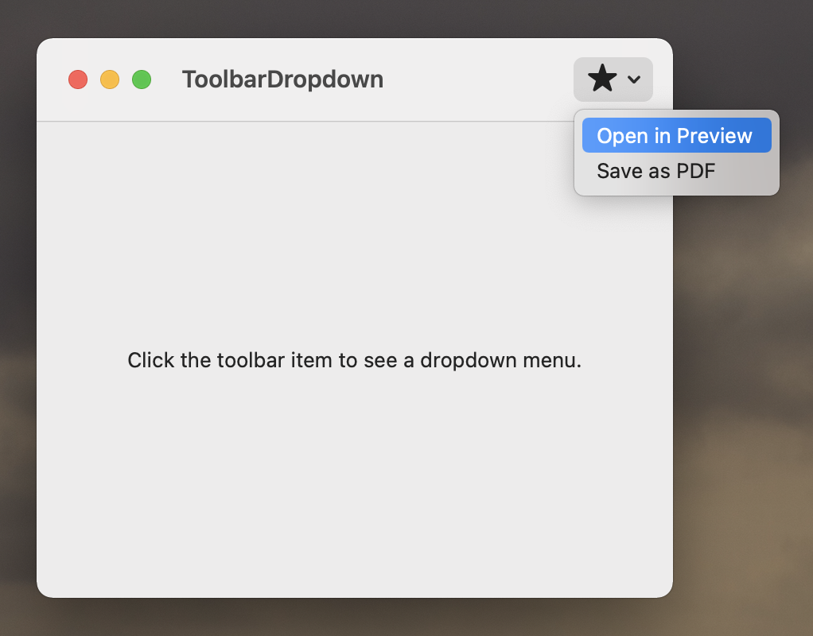

Place a menu in a toolbar item to display a dropdown when the toolbar item is clicked.

import SwiftUI
struct ContentView: View {
var body: some View {
VStack {
Text("Click the toolbar item to see a dropdown menu.")
}
.toolbar {
ToolbarItem {
Menu {
Button("Open in Preview", action: {})
Button("Save as PDF", action: {})
} label: {
Label("Star", systemImage: "star.fill")
}
}
}
.frame(width: 400, height: 300)
}
}
Swift Programming for macOS © 2025
Built by Gavin Wiggins